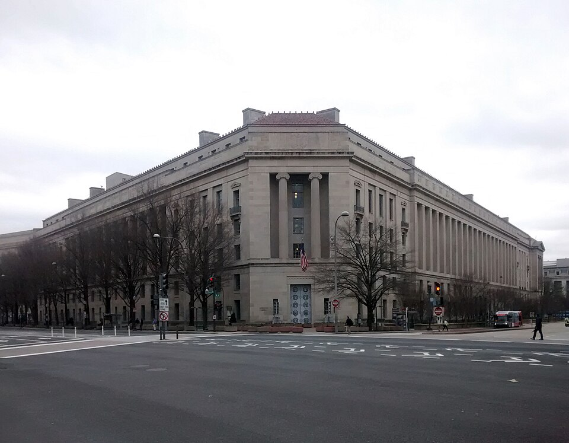
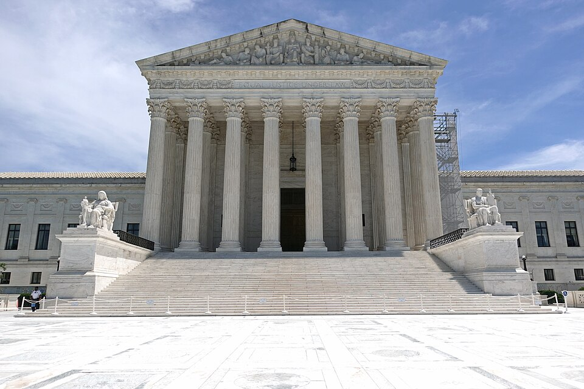

Vol. I · No. 139 · Wednesday, October 14, 2026 · 11 items · 9.9 min read
A bank pays a record fine for late red flags, Anthropic asks the full D.C. Circuit to look again, and a missile reaches Aramco’s home city.
Corporate · Washington and Charlotte · cross-spectrum LLCR
Bank of America pays $1.21 billion for money-laundering failures, including the OCC’s largest fine ever
Bank of America Corporate Center, Charlotte. Ken Lund, CC BY-SA 2.0, via Wikimedia Commons
Bank of America will pay about $1.21 billion after admitting it willfully violated the Bank Secrecy Act, Treasury said on Tuesday. assessed $1.2 billion, the third-largest penalty in Treasury’s history after Binance and . The OCC’s $750 million share, against that sum, is the largest civil money penalty in the regulator’s 163 years.
“even the biggest financial institutions are not above the law”
Scott Bessent, Treasury Secretary, October 13
The charge is late reporting at scale: more than $5 billion of went unreported on time, over $1 billion of it tied to Chinese laundering networks and southwest-border illicit finance. The bank was already under a 2024 cease-and-desist order; the comptroller called the violations “egregious and continued.”
The bank reports third-quarter results Wednesday and will book a $1.2 billion charge, about 17 cents a share, Banking Dive reported. The shares fell more than 2 percent.
AI · Washington
Anthropic asks the full D.C. Circuit to rehear its loss over the Pentagon’s “supply chain risk” label
Anthropic petitioned the D.C. Circuit on Tuesday to a 2-1 panel ruling upholding the Defense Department’s designation of the company as a “supply chain risk,” which bars defense contractors from using Claude on Pentagon work, CNBC reported. The petition says it was branded a risk “because it declined to permit its models to be used for mass surveillance of Americans or lethal autonomous warfare.”
It argues the majority misread and ignored “straightforward evidence the designation was retaliation,” MLex reported. A San Francisco federal judge ruled in August, in a parallel case, that it was illegal retaliation. On Wednesday it shows IPO investors its third-quarter numbers, CNBC reported. This brief is compiled using Anthropic’s model.
News · Sanaa and Dhahran · cross-spectrum LLCR
Saudi jets hit Houthi fuel depots in Sanaa, and a Houthi missile reaches Aramco’s home city
The Saudi-led coalition struck the Yemen Petroleum Company’s in Sanaa on Tuesday and hit port in “10 waves,” the Guardian reported. Then a missile struck an Aramco office building in Dhahran, causing a “limited fire” and no injuries, the AP reported; the Guardian said it was intercepted and debris fell on homes.
Trump wrote that the Houthis were “purposefully trying to drive up Oil Prices” but did not say whether he would join in. Iran’s said Iranian forces strike about five “smuggling ships” a night.
AI
Who is listening
AI · San Francisco
An OpenAI engineer is charged with hiding a recorder in an executive conference room

The Justice Department, Washington. Gunnar Klack, CC BY-SA 4.0, via Wikimedia Commons
A complaint unsealed Tuesday charges Abdulrahman Alfozan, 35, a Saudi national who joined OpenAI in July 2025, with trying to intercept oral communications, the Justice Department said. OpenAI found an encrypted recorder wrapped in toilet paper behind a television in an executive conference room around Sept. 30. A chatbot account tied to his spouse had asked how to build “a continuous audio recorder,” the complaint says. He faces up to five years.
Director of National Intelligence said the case “underscores why winning the global super intelligence race is a national security prerogative,” and praised the . OpenAI says its own models identified the suspect, Business Insider reported.
Markets & Deals
A dating app comes home
Corporate · New York
Bumble agrees to a $1.3 billion take-private, and its controlling holders approve it by written consent
Nasdaq MarketSite, Times Square. ajay_suresh, CC BY 2.0, via Wikimedia Commons
Bumble signed a definitive agreement on Tuesday to be acquired by Ithaca Holdings for $6.05 a share in cash, about 138 percent above the unaffected Oct. 9 close, a $1.3 billion deal, a fraction of its 2021 IPO value. A special committee ran the process; founder Whitney Wolfe Herd recused herself.
Affiliates of Blackstone and Wolfe Herd then approved it by , so there will be no shareholder vote; the parties will file a . Davis Polk advised the committee, Kirkland & Ellis advised Ithaca and Wachtell advised Wolfe Herd. Plaintiff firms announced investigations the same day.
Corporate · New York
JPMorgan misses for the first time in nearly three years; Williams still sees one more hike
JPMorgan earned $15.3 billion, or $5.57 a share, against $5.93 expected, its first miss in nearly three years, on slower fixed-income trading, the AP said. profit jumped and Citi beat. told Bloomberg “it may be appropriate to have one more rate hike.” Early Wednesday the 10-year yielded 5.195 percent, the 30-year 5.549 and the 2-year 4.772, CNBC reported. September CPI is due at 8:30, expected at 3.6 percent.
Law & the Courts
Deference and credibility
Law · Washington
The justices sound unpersuaded by a bid to cut deference to sentencing commentary

The Supreme Court, Washington. 颐园居, CC BY-SA 4.0, via Wikimedia Commons
The Supreme Court heard Beaird v. United States on Tuesday, which asks whether courts must still defer to the Sentencing Commission’s after Loper Bright cut back agency deference. The commentary defines a large-capacity magazine as more than 15 rounds; Beaird’s Glock held 17. Justice Sotomayor warned of “a sea of confusion for lower court judges,” and most of the bench appeared “largely unconvinced,” Bloomberg Law reported.
The court also agreed to hear the government’s challenge to a in CREW’s records suit over whether the U.S. DOGE Service is an agency, its second intervention in the case.
The World
Rome and Kyiv
News · Rome · cross-spectrum LLLCR
Pope Leo XIV has lung cancer, the Vatican says, after surgeons remove part of his right lung
Pope Leo XIV at Montserrat, June 10. Sergio López Prieto, CC BY-SA 4.0, via Wikimedia Commons
The Vatican said late Tuesday that a nodule removed at Rome’s hospital confirmed “lung ,” which had been “suspected by preoperative tests,” the New York Times reported. The pope, 71, was in surgery about 90 minutes, and the Vatican said “the surgery was successful, and there were no complications.” It did not say whether further treatment will follow; on Wednesday it said he “had a restful night.”
News · Kyiv · cross-spectrum LLC
Russian missiles hit Kyiv’s Darnytska power plant days into the energy ceasefire
Ballistic missiles struck the power plant and an apartment block late Tuesday, killing two and injuring 21, Kyiv’s mayor said, the BBC reported. Zelensky said Ukraine “is not even receiving early warnings about ballistic missile launches.” Trump said “we are sharing intel.” That came hours after Reuters reported the first strike-free day for energy sites since the .
Entertainment & EASL
Markets, defined and undefined
EASL · Denver
A 10th Circuit panel sounds ready to undo the class of 2022’s extra college season
The 10th Circuit’s courthouse, Denver. Nan Palmero, CC BY 2.0, via Wikimedia Commons
A 10th Circuit panel pressed the players hard on Tuesday in Wisne v. NCAA, the appeal of a nationwide injunction granting athletes from the high-school class of 2022 of eligibility; the court stayed it last month. “What is the market? You haven’t defined it,” Judge Kelly said. Another called the players’ “hugely overbroad” with “almost no evidence.” The panel “appeared likely to reverse,” Sportico wrote.
The judges asked whether to wait for the Protect College Sports Act, which would give the NCAA antitrust immunity on eligibility. The same day Ohio Gov. Mike DeWine signed an granting the class a fifth year.
EASL · South Florida · New York
A court unseals Korn Ferry’s memo on Brian Flores in the coaching suit that names the Dolphins
A one-page memo prepared for the Las Vegas Raiders, unsealed Tuesday in Brian Flores’s against the NFL and six teams including the Dolphins, calls him “Polished and a good presenter despite growing up in Brownsville, Brooklyn (same as Mike Tyson),” Front Office Sports reported. It also quotes an unnamed executive: “he was the worst hiring decision we’ve ever made.” Flores’s lawyer, Douglas Wigdor, said the documents show “unlawful retaliation.”
Compiled by Matthew Yellin · mattyellin.com · Est. May 2026 · A cross-spectrum brief drawn each morning from wires, filings, and the trade press